SPSS SET 命令 – 快速教程
By Ruben Geert van den Berg under SPSS A-Z
为什么要学习关于 SPSS 设置的知识？ 因为这样做可以让你：
- 事半功倍地创建更好的输出结果；
- 加速大量不同的任务；
- 完成原本不可能完成的任务。
那么，哪些设置值得学习呢？ 下表列出了我们认为最重要的 10 个设置。
最有用的 10 个 SPSS 设置
| 设置 (SETTING) | 选项 (OPTIONS) | 描述 (DESCRIPTION) |
|---|---|---|
| TNUMBERS | BOTH / LABELS / VALUES | 如何在数据透视表 (Pivot Table) 中显示数值 |
| TVARS | BOTH / LABELS / NAMES | 如何在数据透视表中显示变量 |
| OVARS | BOTH / LABELS / NAMES | 如何在输出查看器 (Output Viewer) 的目录中显示变量 |
| TLOOK | (文件路径 .stt) / NONE | 表格外观文件 (Tablelook file)：数据透视表的样式 |
| SIGLESS | ON / OFF | 是否在表格中将小的显著性水平显示为 < 0.001 |
| CTEMPLATE | (文件路径 .sgt) / NONE | 图表模板文件 (Chart template file)：图表的样式 |
| LOCALE | (区域设置 locale) / OSLOCALE | 国家和字符集 |
| SEED | (选择的整数) / RANDOM | 如果 RNG = MC，则使用的随机种子 |
| PRINTBACK | NONE / LISTING | 是否将语法打印到输出查看器 |
| ODISPLAY | MODELVIEWER / TABLES | 是否对某些输出使用模型查看器 |
背景 & 包含所有设置的 Google 表格
大部分设置都可以通过导航到“_E_dit (编辑)”  → “Optio n s (选项)”进行调整，如下图所示。
→ “Optio n s (选项)”进行调整，如下图所示。
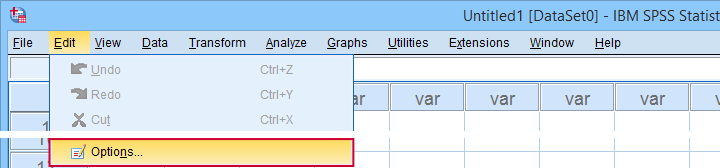
遗憾的是，“选项”对话框有点像迷宫，在这里找到所需的设置可能很耗时。 另一个主要的愚蠢之处是这里没有“粘贴 (Paste)”按钮。
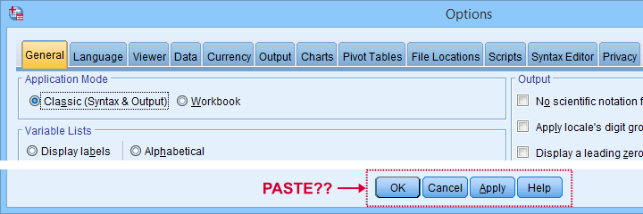
因此，使用 SPSS 语法 是调整设置的更好选择。 但从哪里开始呢？ 首先，我们创建了一个包含所有设置的概述，请查看 这个 Google 表格，部分内容如下所示。
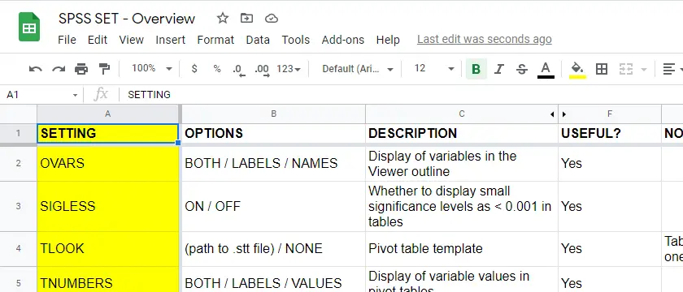
请注意，F 列标明了我们是否认为某个设置有用。 本教程的其余部分演示了 10 个最有用的设置，按重要性从高到低排序。 所有示例都使用 bank-clean.sav 文件，部分内容如下所示。
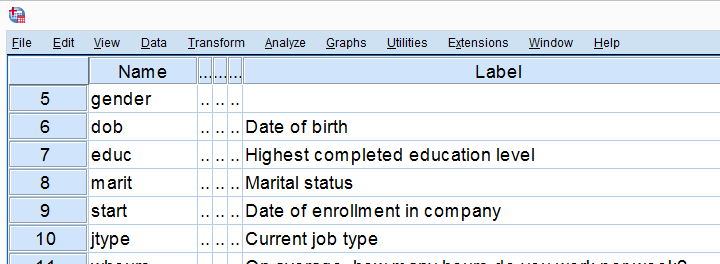
SET TNUMBERS - 表格数值
TNUMBERS 控制如何在输出表格中显示数值。 以下语法演示了一个快速示例。
***在所有后续表格中显示值和值标签。
** set tnumbers both.
***运行最小频率表。
** frequencies marit.
***在所有后续表格中仅显示值标签。
** set tnumbers labels.
***运行最小频率表。
** frequencies marit.结果
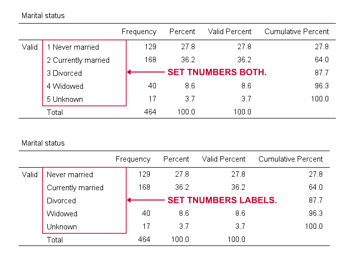
报告数值和值标签是筛选数据的推荐设置。 但是，要创建包含在最终报告中的“干净”表格，你可能只想显示值标签。
SET TVARS - 表格变量
TVARS 控制如何在输出表格中显示变量。 要进行快速演示，请尝试以下语法。
***在后续输出表格中显示变量名称和标签。
** set tvars both.
***运行最小描述性统计表。
** descriptives q1 to q3.
***在后续输出表格中仅显示变量标签。
** set tvars labels.
***运行最小描述性统计表。
** descriptives q1 to q3.结果
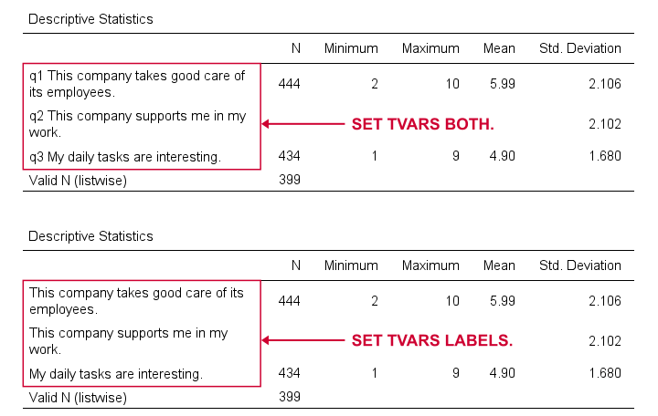
对于筛选数据，通常最好同时显示变量名称和标签。 但是，对于创建报告表格，我们建议仅显示变量标签。
SET OVARS - 大纲变量
OVARS 控制如何在输出大纲中显示变量。 以下语法给出了一个快速演示。
***在查看器大纲中显示变量名称和标签。
** set ovars both.
***频率表和条形图。
** frequencies q1 to q3
/barchart.
***在查看器大纲中仅显示变量名称。
** set ovars names.
***频率表和条形图。
** frequencies q1 to q3
/barchart.结果
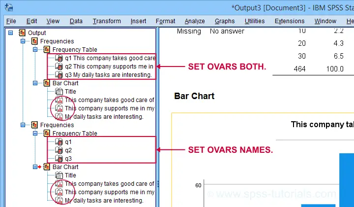
请注意，OVARS 设置忽略了使用频率表创建的条形图。 直方图也是如此。 我们认为这是 SPSS 中的一个很小但有时令人恼火的 bug 。
SET TLOOK - 表格外观
表格外观 或 .stt 文件是纯文本文件，其中包含表格的样式，例如字体、背景颜色和边框。 以下语法演示需要将 clean-11pt.stt 文件放在计算机上的 d:/templates 文件夹中。
***使用 SPSS 默认表格样式。
** set tlook none.
***运行最小频率表。
** frequencies marit.
***设置更好的表格外观。
** set tlook 'd:/templates/clean-11pt.stt'.
***运行最小频率表。
** frequencies marit.结果
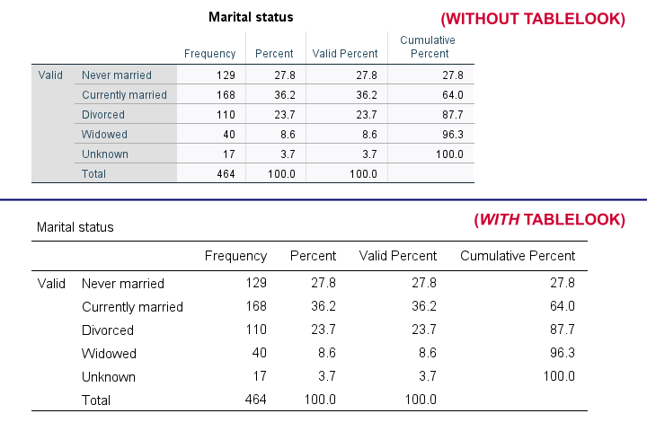
注意
- 你还可以使用菜单或（更快） OUTPUT MODIFY 将表格外观应用于现有表格。
- 遗憾的是，
TLOOK设置忽略了CD命令：你总是需要同时指定文件夹和文件名…
SET SIGLESS - 显著性小于…
SIGLESS（SPSS 27 中引入）控制如何在输出表格中显示小的显著性水平。 我们认为此设置存在 bug ：除非你单独运行每一行，否则以下语法将忽略它。
***将小的 p 值显示为 <.001。
** set sigless on.
***运行最小相关矩阵。
** correlations dob salary.
***将小的 p 值显示为 .000。
** set sigless off.
***运行最小相关矩阵。
** correlations dob salary.结果
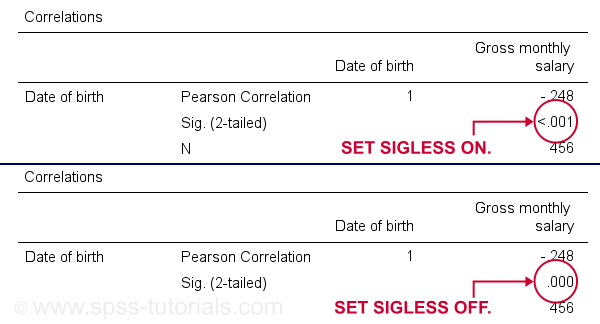
SET CTEMPLATE - 图表模板
图表模板或 .sgt 文件是纯文本文件，其中包含图表的样式，例如颜色、大小和布局。 以下快速演示需要将 barchart-freq-dsort-en-h360.sgt 文件放在计算机上的 d:/templates 文件夹中。
***使用 SPSS 默认图表样式。
** set ctemplate none.
***最小条形图频率。
** GRAPH
/BAR(SIMPLE)=COUNT BY marit
/TITLE='婚姻状况的频率分布'
/SUBTITLE='所有受访者 | N = 464'.
***设置条形图的图表模板。
** set ctemplate 'd:/templates/barchart-freq-dsort-en-h360.sgt'.
***最小条形图频率。
** GRAPH
/BAR(SIMPLE)=COUNT BY marit
/TITLE='婚姻状况的频率分布'
/SUBTITLE='所有受访者 | N = 464'.结果

注意
- 创建所需的图表后，你可能需要将
CTEMPLATE设置回NONE。 - 某些命令（
GRAPH、GGRAPH）具有用于应用图表模板的/TEMPLATE子命令，但这无法正常工作。 - 你还可以从菜单或（更快） OUTPUT MODIFY 将图表模板应用于现有图表。
SET LOCALE
在最近的 SPSS 版本中，LOCALE 主要用于指定使用哪个小数点分隔符。 它也可能影响 SPSS 使用的字符编码，但前提是 UNICODE = OFF（现在很少使用）。
***将区域设置设置为德语（逗号作为小数点分隔符）。
** set locale 'german'.
***运行最小描述性统计表。
** descriptives whours.
***将区域设置设置为德语（点作为小数点分隔符）。
** set locale 'english'.
***运行最小描述性统计表。
** descriptives whours.结果
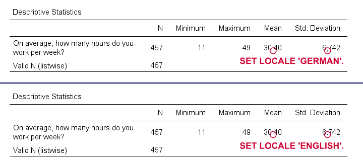
快速说明：我通常更喜欢使用 DOT 和 COMMA 格式来选择使用哪个小数点分隔符。 这样做还可以使字符串到数值变量的转换独立于你的设置，如 SPSS 将字符串转换为数值变量 中所述。 但是，以下语法只是使用这种替代方法复制了前面的示例。
***将 whours 的格式设置为点（逗号作为小数点分隔符）。
** formats whours(dot2).
***运行最小描述性统计表。
** descriptives whours.
***将 whours 的格式设置为逗号（点作为小数点分隔符）。
** formats whours (comma2).
***运行最小描述性统计表。
** descriptives whours.SET SEED - 随机种子
设置随机种子允许你精确地复制 SPSS 中的任何随机事件：计算随机变量或抽取随机样本。 以下示例计算两个正态分布随机变量，然后精确地复制这两个变量。
***将随机种子设置为 1（假设 RNG = MC）。
** set seed 1.
***计算两个“随机”变量。
** compute rnd01 = rv.normal(100,15).
compute rnd02 = rv.normal(100,15).
execute.
***将随机种子重置为 1（假设 RNG = MC）。
** set seed 1.
***复制先前的“随机”变量。
** compute rnd03 = rv.normal(100,15).
compute rnd04 = rv.normal(100,15).
execute.结果
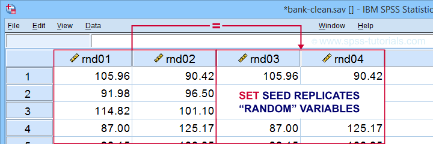
小提示：只有当 RNG = MC（默认值）时，SET SEED 才会生效。 如果 RNG = MT，则需要使用 SET MTINDEX，但我认为没有人会使用它。
SET PRINTBACK
PRINTBACK 告诉 SPSS 是否将你运行的语法（来自语法窗口或菜单）打印到输出窗口中。 如果你将所有输出导出到一个 .pdf 或 WORD 文件，这样做可能会派上用场。
***将语法打印到输出查看器中。
** set printback listing.
***运行最小描述性统计表。
** descriptives whours.
***不要将语法打印到输出查看器中。
** set printback none.
***运行最小描述性统计表。
** descriptives whours.结果
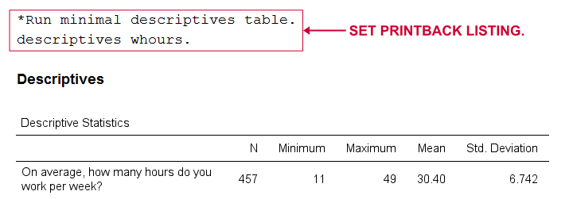
SET ODISPLAY - 输出显示
对于 GENLINMIXED 和 NPTESTS，有两种输出格式可用：
- 可怕的“模型查看器”对象； 或者
- 普通输出（数据透视）表格。
以下语法为基本的 Kruskal-Wallis 检验 创建两种格式。
***为 NPTESTS 创建模型查看器（不推荐）。
** set odisplay modelviewer.
***Kruskal-Wallis 检验。
** NPTESTS
/INDEPENDENT TEST (salary) GROUP (jtype) KRUSKAL_WALLIS(COMPARE=PAIRWISE)
/MISSING SCOPE=ANALYSIS USERMISSING=EXCLUDE
/CRITERIA ALPHA=0.05 CILEVEL=95.
***为 NPTESTS 创建数据透视表（推荐）。
** set odisplay tables.
***Kruskal-Wallis 检验。
** NPTESTS
/INDEPENDENT TEST (salary) GROUP (jtype) KRUSKAL_WALLIS(COMPARE=PAIRWISE)
/MISSING SCOPE=ANALYSIS USERMISSING=EXCLUDE
/CRITERIA ALPHA=0.05 CILEVEL=95.结果
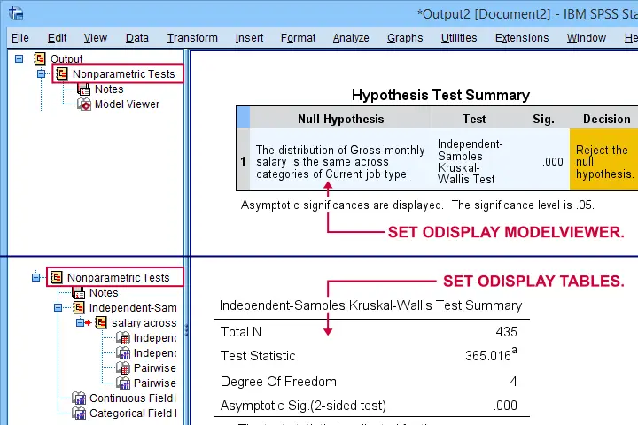
注意：我通常更喜欢使用完全不同的命令来进行 Kruskal-Wallis 检验，如 如何在 SPSS 中运行 Kruskal-Wallis 检验？ 中所述。 这种方法不包括成对比较，但我不太喜欢这些比较。
相关命令 - SHOW、PRESERVE & RESTORE
在结束之前，我应该指出，你可以使用 SHOW 来查找设置。 比如，SHOW ALL. 显示所有设置。 这些设置包括一些你无法用 SET 设置的设置，以及一些你根本无法更改的设置。
最后但同样重要的是，你可以通过在 SET 前面加上 PRESERVE 并在其后面加上 RESTORE 来撤消设置中的更改。 我发现这些命令主要用于构建会更改他人设置的 SPSS 工具。